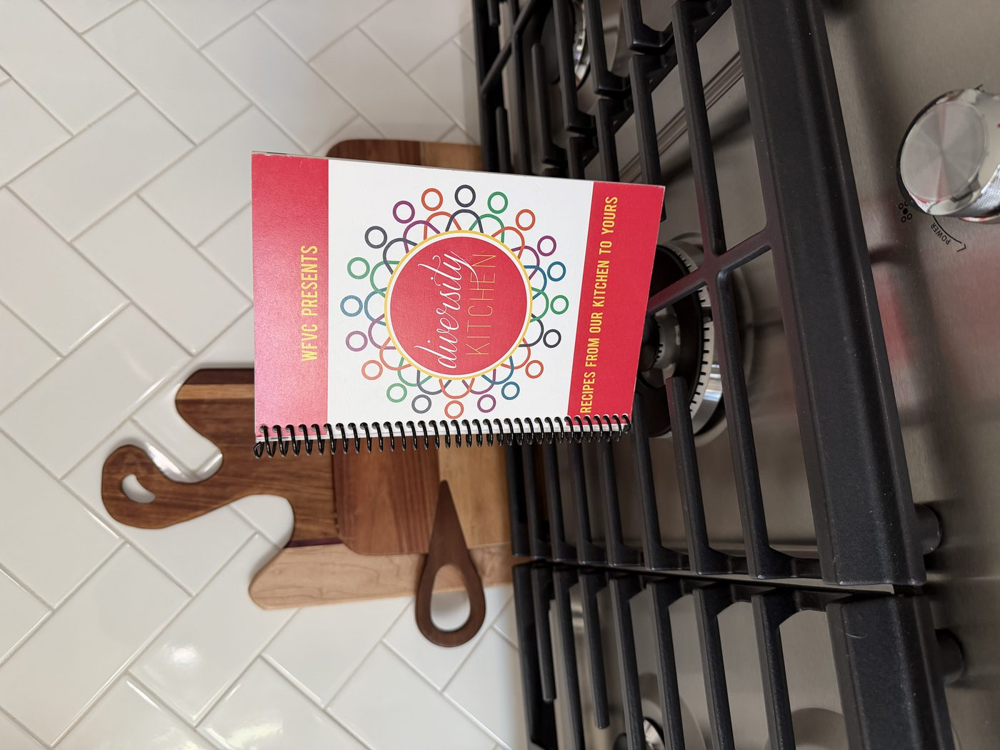
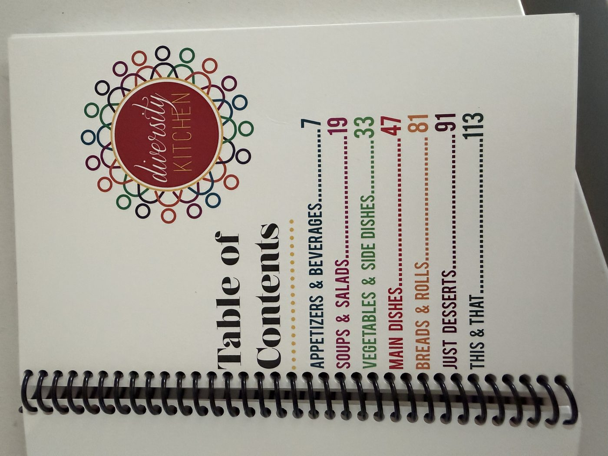
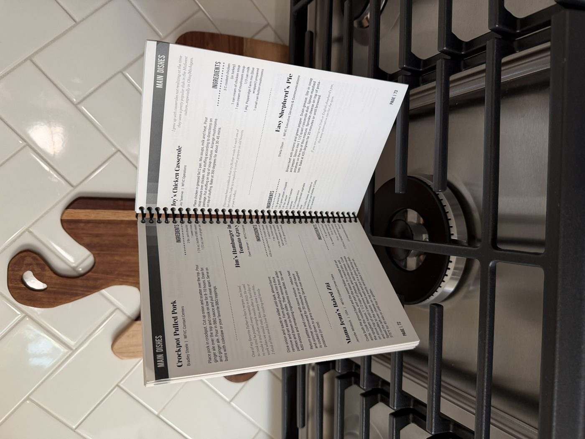

D&I Champion · Wells Fargo
Diversity Kitchen: a cookbook that fed communities, not just curiosity
A 100-page employee cookbook, built from real family recipes and real stories, that raised $30,000 for local food banks.
The idea
Diversity Kitchen started as a simple question: what if we asked our own people to share the recipes that meant something to them, and turned that into something the whole company could hold in their hands? I led the project from concept to print, building a cookbook made entirely of family recipes submitted by Wells Fargo team members across our virtual channels.

The finished Diversity Kitchen cookbook, printed and ready to share.
How we gathered it
We built a SharePoint site where employees could submit a family recipe alongside a short story: why they loved it, what made it unique, and what it meant to them or their family. That storytelling element mattered as much as the recipes themselves. It turned the cookbook into something closer to a shared cultural archive than a simple recipe collection, one that reflected the real diversity of backgrounds, traditions, and families across the company.


Bringing it to print
Once we had enough submissions to fill a genuinely substantial book, we compiled, designed, and printed a full 100-page cookbook at cost, keeping our production expenses as low as possible so more of every sale could go toward the cause. We timed the launch to September, Hunger Action Month, and sold the cookbook internally. Demand outpaced our first print run, and we had to order additional copies to keep up.
Cookbook sales raised enough to donate $30,000 to local food banks, split between organizations in Alameda County, California, Marin County, California, and Charlotte, North Carolina. The project was also awarded an additional $5,000 to donate to Second Harvest Food Bank of Metrolina.
Why it mattered
Diversity Kitchen gave people a low-pressure, personal way to share a piece of who they are with colleagues they might never otherwise get to know that way, while turning that participation into direct, tangible support for communities facing food insecurity. It's one of the projects I'm proudest of, not because of a metric or a deadline, but because of what it made possible for people on both ends of it: the employees who shared a piece of their story, and the families the proceeds ultimately reached.